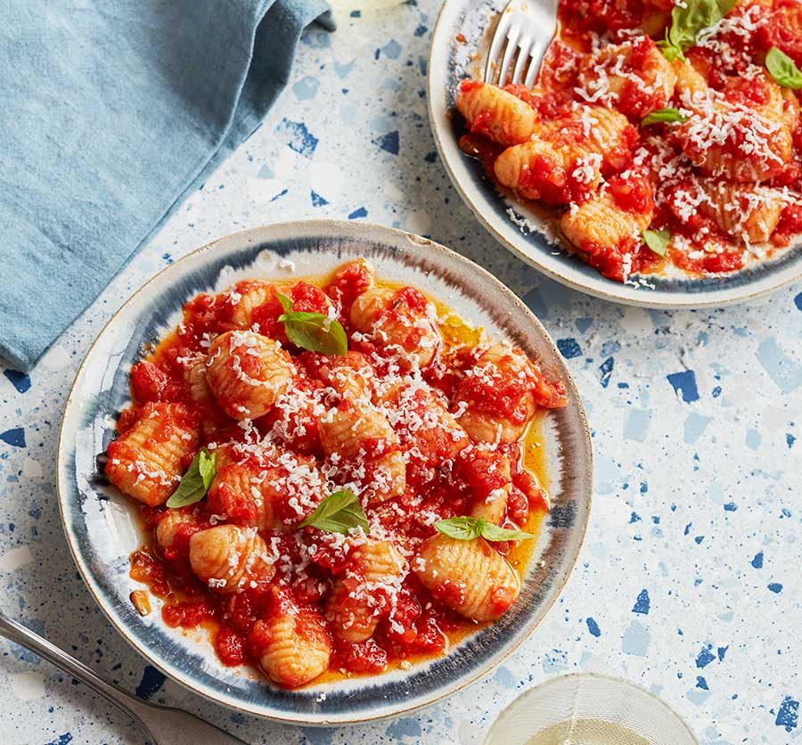

Gnocchi with Pomodoro Sauce

Description
Gnocchi with pomodoro sauce is a comforting Italian classic, where pillowy-soft potato dumplings meet a vibrant, slow-cooked tomato sauce. The gnocchi, delicate yet satisfying, soak up the velvety sauce infused with garlic, basil, and a hint of olive oil. Each bite melts in your mouth, bursting with comforting, homely flavors.
Topped with a generous sprinkle of freshly grated Parmesan and a drizzle of aromatic olive oil, the dish is a perfect harmony of simplicity and indulgence. The tangy, sweet pomodoro sauce balances beautifully with the gnocchi's creamy texture, making this dish a true celebration of Italian culinary tradition.
Ingredients
- ¼ cup olive oil
- 2 (12 ounce) packages refrigerated gnocchi
- 3 cloves garlic, minced, or more to taste
- ¼ teaspoon crushed red pepper flakes
- 1 pinch salt
- 1 pinch sugar
- 1 (28 ounce) can whole Italian plum tomatoes (preferably San Marzano)
- 8 ounces marinated mozzarella balls
- fresh parsley or basil
Steps
- Open marinated mozzarella balls and measure out 1/4 cup of the oil.
- Pour oil into a heavy skillet over medium-high heat. Cook gnocchi in batches in the hot oil until golden and heated through. Divide gnocchi evenly amongst 4 gratin dishes.
- Add garlic and red chili flakes to the oil in the same skillet. Cook until garlic is fragrant, about 30 seconds. Stir in salt and sugar. Pour in tomatoes. Use a wooden spoon to break up and crush the tomatoes.
- Bring sauce to a boil, reduce heat, cover and simmer tomatoes for 15 minutes.
- Set an oven rack about 6 inches from the heat source and preheat the oven's broiler.
- Taste sauce and adjust seasonings if desired. Spoon tomato sauce over the gnocchi. Top each dish with 3 marinated mozzarella balls and set on a baking sheet.
- Add baking sheet to oven and broil until mozzarella balls are melted and golden browned, 3 to 5 minutes. Garnish with parsley or basil if desired and serve immediately.
Che bontà!
Home